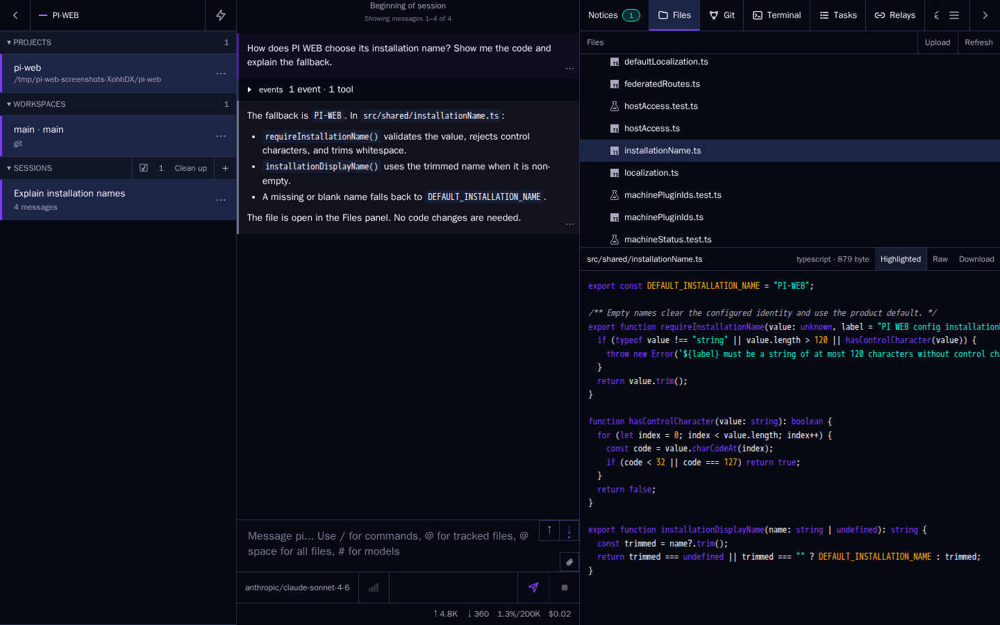
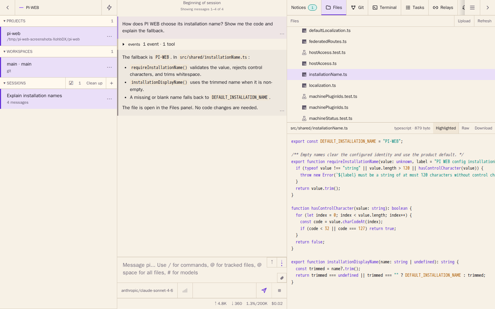
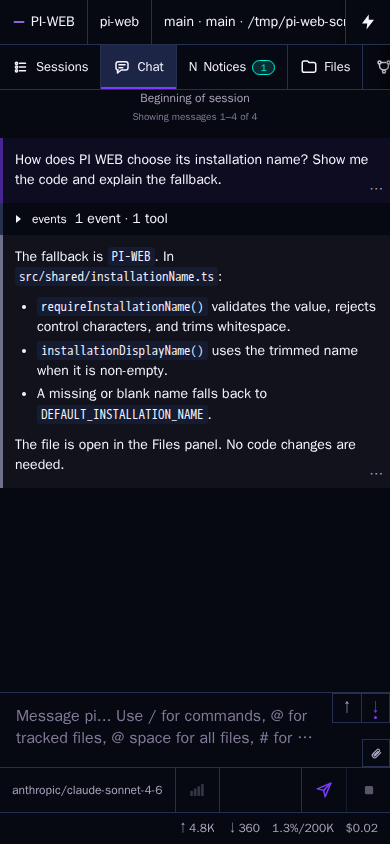
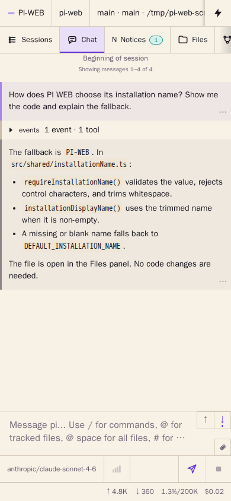

For Pi Coding Agent
A web interface
for your AI agents.
Send a task from your computer. Read the response on your tablet. Reply from your phone. One ongoing session. Any device.
Your computer or server. Your projects. Any browser.
curl -fsSL https://raw.githubusercontent.com/jmfederico/pi-web/main/install.sh | shA workspace for agent work
Several sessions.
One place to work.
Let one agent fix a bug while another updates the docs in a separate worktree. Switch sessions to review progress and give the next instruction.




Select a screenshot to open it at full size in a new tab. Screenshots show an example session.
- Projects and worktrees
- Choose where each agent works. Keep independent tasks in separate Git worktrees.
- Sessions and instructions
- Read the conversation, follow tool activity, and send the next instruction without switching apps.
- Files and tools
- Preview workspace files alongside the chat. Open a terminal, inspect changes, and check context usage and costs.
Change screens.
Keep the conversation.
No copying messages. No starting over.
Just open PI WEB in the next browser.
-
Send from your computer.
Start a task in your browser, then get on with your day.
-
Read on your tablet.
Pick up your tablet and read the agent’s response in the same conversation.
-
Reply from your phone.
Send the next instruction from your phone. The conversation carries on.
The work stays put
Your browser can leave.
Your agents don’t have to.
PI WEB runs on your computer or server, separate from the browser you use to reach it. Close the tab or switch devices without stopping the work.
The machine running PI WEB needs to stay on. Connect your devices through private remote access.
Set up remote accessMake it yours
Your projects.
Your tools. Your setup.
PI WEB is a web UI for Pi Coding Agent, running where your files and tools already live. Add plugins when you need more, without leaving your workspace.